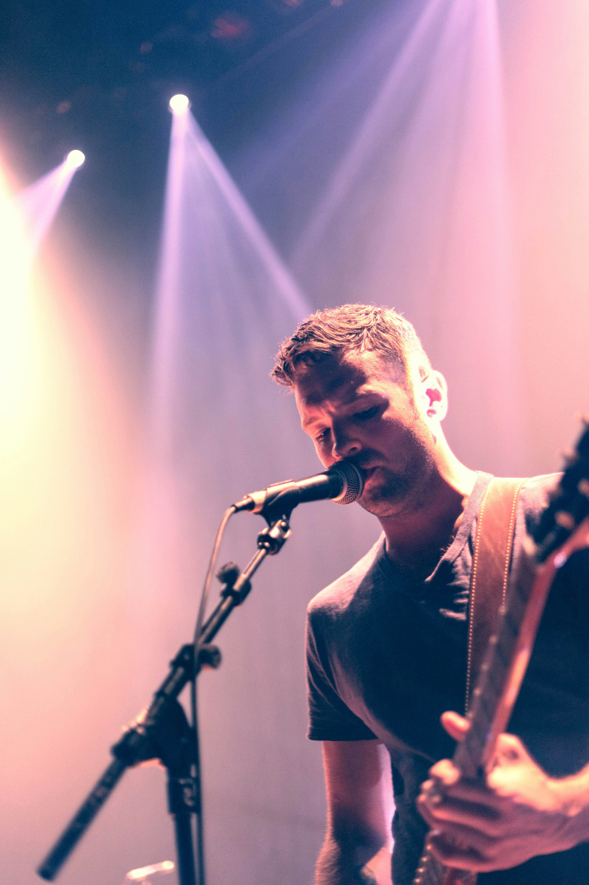
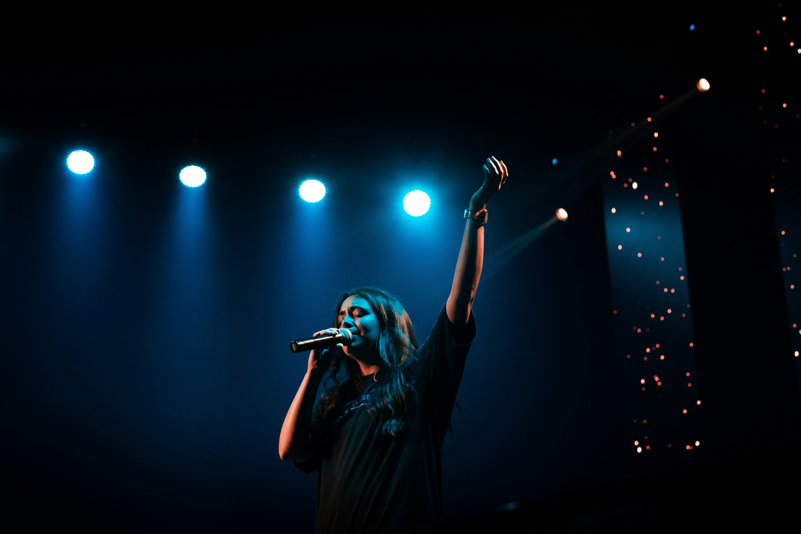

Lisa Waters (Vokal):
Lisa, grup için duygusal derinliği olan ve kalpleri titreten vokalleriyle tanınır. Sahnedeki karizmatik duruşu ve kendine özgü sesiyle dinleyicileri etkiler.
Alex Johnson (Vokal):
Alex, güçlü ve duygusal sesiyle dikkat çeker. Sahnedeki enerjisi ve performansıyla izleyicileri kendine hayran bırakır.
Max Miller (Gitar, Enstrümanlar):
Max, grup için gitarın yanı sıra çeşitli enstrümanlarla da müziğe renk katar. Virtüöz gitar soloları ve çeşitli enstrümanlarla yarattığı melodileriyle dikkat çeker.